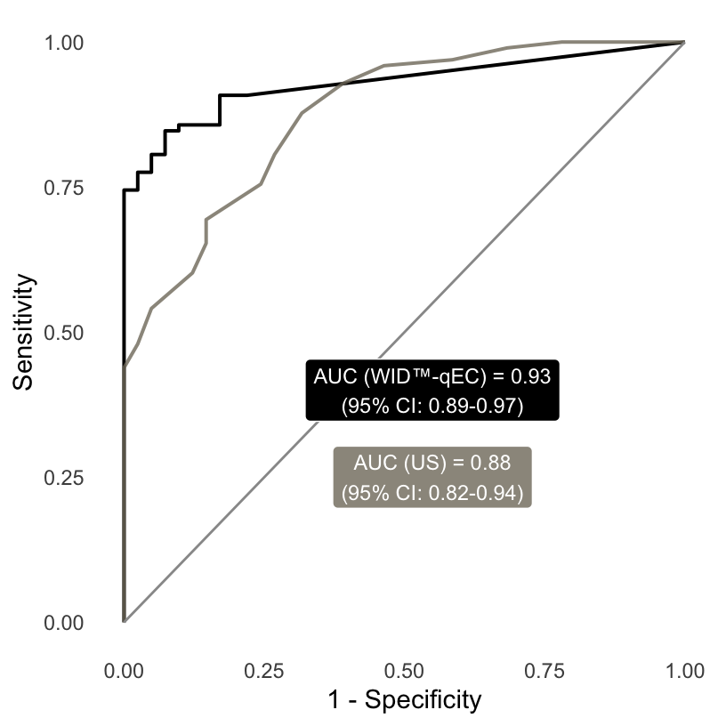

5. Detailed analysis of the Barcelona Validation set
Chiara Herzog
May 31, 2022
Comparison of self-sampling versus healthcare professional-assisted collection (AROC) (Figure S13)
dat <- mldat %>%
filter(set == "Barcelona Validation" & !is.na(type)) %>%
mutate(type = factor(type, levels = c("Control", "Endometrial cancer")),
selfsampling = case_when(selfsampling == "Yes" ~ "Self-collected",
selfsampling == "Clinician assisted" ~ "HCP-assisted collection")) %>%
mutate(selfsampling = factor(selfsampling, levels = c("Self-collected", "HCP-assisted collection"))) %>%
droplevels()
AROC_bnp_all <- AROC.bnp(formula.h = sum ~ age,
group = "type",
tag.h = "Control",
data = dat,
standardise = TRUE,
p = seq(0, 1, l = 101),
compute.lpml = TRUE,
compute.WAIC = TRUE,
compute.DIC = TRUE,
pauc = pauccontrol(compute = FALSE),
prior = priorcontrol.bnp(L = 10),
density = densitycontrol.aroc(compute = FALSE),
mcmc = mcmccontrol(nsave = 8000, nburn = 2000, nskip = 1),
parallel = "multicore",
ncpus = 4)
AROC_bnp_self <- AROC.bnp(formula.h = sum ~ age,
group = "type",
tag.h = "Control",
data = dat[dat$selfsampling=="Self-collected",],
standardise = TRUE,
p = seq(0, 1, l = 101),
compute.lpml = TRUE,
compute.WAIC = TRUE,
compute.DIC = TRUE,
pauc = pauccontrol(compute = FALSE),
prior = priorcontrol.bnp(L = 10),
density = densitycontrol.aroc(compute = FALSE),
mcmc = mcmccontrol(nsave = 8000, nburn = 2000, nskip = 1),
parallel = "multicore",
ncpus = 4)
AROC_bnp_hcp<- AROC.bnp(formula.h = sum ~ age,
group = "type",
tag.h = "Control",
data = dat[dat$selfsampling=="HCP-assisted collection",],
standardise = TRUE,
p = seq(0, 1, l = 101),
compute.lpml = TRUE,
compute.WAIC = TRUE,
compute.DIC = TRUE,
pauc = pauccontrol(compute = FALSE),
prior = priorcontrol.bnp(L = 10),
density = densitycontrol.aroc(compute = FALSE),
mcmc = mcmccontrol(nsave = 8000, nburn = 2000, nskip = 1),
parallel = "multicore",
ncpus = 4)
df1 <- data.frame(p = AROC_bnp_all$p,
lower = AROC_bnp_all$ROC[,1],
roc = AROC_bnp_all$ROC[,2],
upper = AROC_bnp_all$ROC[,3],
set = "all")
df1 <- rbind(df1,
c(-0.000001,0,0,0, "all"))
df2 <- data.frame(p = AROC_bnp_self$p,
lower = AROC_bnp_self$ROC[,1],
roc = AROC_bnp_self$ROC[,2],
upper = AROC_bnp_self$ROC[,3],
set = "self-collected")
df2 <- rbind(df2,
c(-0.000001,0,0,0, "self-collected"))
df3 <- data.frame(p = AROC_bnp_hcp$p,
lower = AROC_bnp_hcp$ROC[,1],
roc = AROC_bnp_hcp$ROC[,2],
upper = AROC_bnp_hcp$ROC[,3],
set = "HCP-assisted")
df3 <- rbind(df3,
c(-0.000001,0,0,0, "HCP-assisted"))
df = rbind(df1, df2, df3)
anno1 <- paste0("AUC (all) = ", round(AROC_bnp_all$AUC[1],2), "\n(95% CI: ", round(AROC_bnp_all$AUC[2], 2), "-", round(AROC_bnp_all$AUC[3], 2), ")")
anno2 <- paste0("AUC (self) = ", round(AROC_bnp_self$AUC[1],2), "\n(95% CI: ", round(AROC_bnp_self$AUC[2], 2), "-", round(AROC_bnp_self$AUC[3], 2), ")")
anno3 <- paste0("AUC (HCP) = ", round(AROC_bnp_hcp$AUC[1],2), "\n(95% CI: ", round(AROC_bnp_hcp$AUC[2], 2), "-", round(AROC_bnp_hcp$AUC[3], 2), ")")
plot <- df %>%
mutate(set = factor(set, levels = c("all", "self-collected", "HCP-assisted"))) %>%
ggplot() +
geom_line(aes(x = as.numeric(p),
y = as.numeric(roc),
colour = set),
size = 0.75) +
xlab("1-Specificity") +
ylab("Sensitivity") +
ylim(0,1) +
theme_minimal() +
theme(plot.title = element_text(size=10),
panel.grid = element_blank(),
legend.position = "top") +
scale_colour_manual(values= c("black", cols[c(6,5)]),
name = "") +
annotate("label",
label = anno1,
x = 0.5, y = 0.75,
size = 3.5,
fill = "black",
colour = "white") +
annotate("label",
label = anno2,
x = 0.5, y = 0.55,
size = 3.5,
fill = cols[6],
colour = "white")+
annotate("label",
label = anno3,
x = 0.5, y = 0.35,
size = 3.5,
fill = cols[5],
colour = "white")
plot 
Dependence on MMR status (Table S4)
mldat_tmp <- mldat %>%
filter(!is.na(type) & (type == "Endometrial cancer" & mmr != "N/A") | (type == "Control" & mmr == "N/A")) %>%
droplevels() %>%
mutate(thresh1 = case_when(sum >= cut$threshold[1] ~ "Endometrial cancer",
sum < cut$threshold[1] ~ "Control")) %>%
mutate(type = factor(type, levels = c("Endometrial cancer", "Control"))) %>%
mutate(thresh1 = factor(thresh1, levels = c("Endometrial cancer", "Control"))) %>%
mutate(disease = case_when(type=="Endometrial cancer" ~ 1,
type == "Control" ~ 0),
score = case_when(thresh1 == "Endometrial cancer" ~ 1,
thresh1 == "Control" ~ 0)) %>%
droplevels()
dat <- data.frame(matrix(nrow = 2, ncol = 3))
colnames(dat) <- c("type", "MMR proficient", "MMR deficient")
dat$type <- c( "Endometrial cancers – n",
"Sensitivity – % (95% CI)")
for(i in 2:length(levels(mldat_tmp$mmr))){
pop_prev = 0.09
name <- levels(mldat_tmp$mmr)[i]
tmp <- mldat_tmp %>%
filter(mmr %in% c(name, "N/A")) %>%
droplevels()
set <- unique(tmp$set)
tab <- table(tmp$thresh1, tmp$type)
# rval <- summary(epi.tests(tab))
tab <- matrix(c(tab[1,1], tab[2,1], tab[1,2], tab[2,2]), ncol = 2)
colnames(tab) <- c("Case", "Control")
rownames(tab) <- c("Case", "Control")
rval2 <- BDtest(xmat=as.matrix(tab), pr=pop_prev, conf.level = 0.95)
dat[1,i] <- sum(tmp$mmr==name)
dat[2,i] <- paste0(round(rval2$SESPDAT$Estimate[1]*100,1), " (",
round(rval2$SESPDAT$`Lower 97.5% limit`[1]*100,1), "–",
round(rval2$SESPDAT$`Upper 97.5% limit`[1]*100,1), ")")
}
x <- compute_ci_diff(mldat_tmp$disease, mldat_tmp$score, mldat_tmp$mmr, t = 1.96)## Group 1 is MMR proficient, group 2 is MMR deficientdat$`∆` <- ""
dat$`∆`[2] <- paste0(round(x$diff[1]*100, 1), " (",
round(x$cil[1]*100, 1), "–",
round(x$ciu[1]*100, 1), ")")
tbl <- dat %>%
gt(rowname_col = "type") %>%
cols_label(
"∆"=html("<i>Difference *</i>")
) %>%
tab_style(
style = cell_text(color = "#707173"),
locations = list(cells_body(
columns = "∆",
rows = everything()
),
cells_column_labels(columns = "∆")
)) %>%
tab_style(
style = list(
cell_text(align = "left")
),
locations = cells_stub(rows = TRUE)
) %>%
tab_options(table.font.names = "Guardian Sans",
column_labels.font.weight = "bold",
row_group.font.weight = "bold",
data_row.padding = 2,
column_labels.font.size = 12,
table.font.size = 11,
row_group.padding = 2,
row_group.border.right.width = px(10),
summary_row.padding = 2,
table.width = px(600),
table.border.top.color = "white",
row_group.border.top.width = px(1),
row_group.border.bottom.width = px(1),
stub.border.width = px(0),
heading.title.font.size = 14) %>%
gt::tab_source_note(gt::html("* Difference in sensitivity (and confidence interval of the difference) between MMR deficient and MMR proficient cancers."))
tbl| MMR proficient | MMR deficient | Difference * | |
|---|---|---|---|
| Endometrial cancers – n | 84 | 25 | |
| Sensitivity – % (95% CI) | 90.5 (82.1–95.8) | 92 (74–99) | 1.5 (-15.7–18.8) |
| * Difference in sensitivity (and confidence interval of the difference) between MMR deficient and MMR proficient cancers. | |||
Comparison with DNAmut and ultrasound (Table S5)
dat <- mldat %>%
filter(dnamut_analysis == "Yes" & !is.na(dnamut_analysis) & !is.na(type)) %>%
mutate(sum_cutoff = case_when(sum >= cut$threshold[1] ~ "positive",
sum < cut$threshold[1] ~ "negative")) %>%
mutate(type = factor(type, levels = c("Endometrial cancer", "Control"))) %>%
mutate(sum_cutoff = factor(sum_cutoff, levels = c("positive", "negative")),
dnamut_result = factor(dnamut_result, levels = c("Positive", "Negative"))) %>%
mutate(disease = case_when(type == "Endometrial cancer" ~ 1,
type == "Control" ~ 0),
ec_score = case_when(sum_cutoff == "positive" ~ 1,
sum_cutoff == "negative" ~ 0),
dnamut_score = case_when(dnamut_result == "Positive" ~ 1,
dnamut_result == "Negative"~ 0)) %>%
droplevels()
dat1 <- data.frame(matrix(nrow = 2, ncol = 5))
colnames(dat1) <- c("Info",
"Type",
"Comparison Test",
"WID™-qEC",
"Difference")
dat1$Info <- c("DNA mutation analysis *")
dat1$Type <- c("Sensitivity – % (95% CI)",
"Specificity – % (95% CI)")
tmp <- dat %>%
pivot_longer(c(sum_cutoff, dnamut_result),
names_to = "analysis",
values_to = "value") %>%
mutate(analysis = factor(analysis, levels = c("dnamut_result", "sum_cutoff")))
tmp_diff <- dat %>%
select(disease, ec_score, dnamut_score)
for (i in 1:length(levels(tmp$analysis))){
name <- levels(tmp$analysis)[i]
tmp2 <- tmp %>%
filter(analysis == name) %>%
droplevels()
pop_prev <- 0.09
tab <- table(tmp2$value, tmp2$type)
tab <- matrix(c(tab[1,1], tab[2,1], tab[1,2], tab[2,2]), ncol = 2)
colnames(tab) <- c("Case", "Control")
rownames(tab) <- c("Case", "Control")
rval2 <- BDtest(xmat=as.matrix(tab), pr = pop_prev, conf.level = 0.95)
dat1[1, i+2] <- paste0(round(rval2$SESPDAT$Estimate[1],2)*100, " (",
round(rval2$SESPDAT$`Lower 97.5% limit`[1], 2)*100, "–",
round(rval2$SESPDAT$`Upper 97.5% limit`[1], 2)*100, ")")
dat1[2, i+2] <- paste0(round(rval2$SESPDAT$Estimate[2],2)*100, " (",
round(rval2$SESPDAT$`Lower 97.5% limit`[2], 2)*100, "–",
round(rval2$SESPDAT$`Upper 97.5% limit`[2], 2)*100, ")")
}
# Compare specs and sensitivites
tmp_diff <- dat %>%
select(disease, ec_score, dnamut_score)
tab <- tab.paired(tmp_diff$disease, tmp_diff$dnamut_score, tmp_diff$ec_score,
testnames = c("DNAmut analysis", "WID-qEC"))
sesp <- sesp.diff.ci(tab, "wald", cont.corr = TRUE)
dat1[1,5] <- paste0(round(sesp$sensitivity[3], 2)*100, " (",
round(sesp$sensitivity[5], 2)*100, "–",
round(sesp$sensitivity[6], 2)*100, ")")
dat1[2,5] <- paste0(round(sesp$specificity[3], 2)*100, " (",
round(sesp$specificity[5], 2)*100, "–",
round(sesp$specificity[6], 2)*100, ")")
dat_dnamut <- dat1
# US qualitative
dat <- mldat %>%
filter(!is.na(us_cat) & !is.na(type)) %>%
mutate(sum_cutoff = case_when(sum >= 0.03 ~ "positive",
sum < 0.03 ~ "negative")) %>%
mutate(sum_cutoff2 = case_when(sum >= 0.63 ~ "positive",
sum < 0.63 ~ "negative")) %>%
mutate(type = factor(type, levels = c("Endometrial cancer", "Control"))) %>%
mutate(sum_cutoff = factor(sum_cutoff, levels = c("positive", "negative")),
sum_cutoff2 = factor(sum_cutoff2, levels = c("positive", "negative")),
us_cat = factor(us_cat, levels = c("Abnormal", "Normal"))) %>%
mutate(disease = case_when(type == "Endometrial cancer" ~ 1,
type == "Control" ~ 0),
ec_score = case_when(sum_cutoff == "positive" ~ 1,
sum_cutoff == "negative" ~ 0),
us_score = case_when(us_cat == "Abnormal" ~ 1,
us_cat == "Normal"~ 0)) %>%
droplevels()
dat1 <- data.frame(matrix(nrow = 2, ncol = 5))
colnames(dat1) <- c("Info",
"Type",
"Comparison Test",
"WID™-qEC",
"Difference")
dat1$Info <- c("Ultrasound evaluation †")
dat1$Type <- c("Sensitivity – % (95% CI)",
"Specificity – % (95% CI)")
tmp <- dat %>%
pivot_longer(c(sum_cutoff, us_cat),
names_to = "analysis",
values_to = "value") %>%
mutate(analysis = factor(analysis, levels = c("us_cat", "sum_cutoff")))
tmp_diff <- dat %>%
select(disease, ec_score, us_score)
for (i in 1:length(levels(tmp$analysis))){
name <- levels(tmp$analysis)[i]
tmp2 <- tmp %>%
filter(analysis == name) %>%
droplevels()
pop_prev <- 0.09
tab <- table(tmp2$value, tmp2$type)
tab <- matrix(c(tab[1,1], tab[2,1], tab[1,2], tab[2,2]), ncol = 2)
colnames(tab) <- c("Case", "Control")
rownames(tab) <- c("Case", "Control")
rval2 <- BDtest(xmat=as.matrix(tab), pr = pop_prev, conf.level = 0.95)
dat1[1, i+2] <- paste0(round(rval2$SESPDAT$Estimate[1],2)*100, " (",
round(rval2$SESPDAT$`Lower 97.5% limit`[1], 2)*100, "–",
round(rval2$SESPDAT$`Upper 97.5% limit`[1], 2)*100, ")")
dat1[2, i+2] <- paste0(round(rval2$SESPDAT$Estimate[2],2)*100, " (",
round(rval2$SESPDAT$`Lower 97.5% limit`[2], 2)*100, "–",
round(rval2$SESPDAT$`Upper 97.5% limit`[2], 2)*100, ")")
}
# Compare specs and sensitivites
tmp_diff <- dat %>%
select(disease, ec_score, us_score)
tab <- tab.paired(tmp_diff$disease, tmp_diff$us_score, tmp_diff$ec_score,
testnames = c("US", "WID-qEC"))
sesp <- sesp.diff.ci(tab, "wald", cont.corr = TRUE)
dat1[1,5] <- paste0(round(sesp$sensitivity[3], 2)*100, " (",
round(sesp$sensitivity[5], 2)*100, "–",
round(sesp$sensitivity[6], 2)*100, ")")
dat1[2,5] <- paste0(round(sesp$specificity[3], 2)*100, " (",
round(sesp$specificity[5], 2)*100, "–",
round(sesp$specificity[6], 2)*100, ")")
dat_us <- dat1
# - combine -------------------
data <- rbind(dat_dnamut, dat_us)
tbl <- data %>%
gt(groupname_col = "Info",
rowname_col = "Type") %>%
text_transform(locations = cells_body(),
fn = function(x){
paste0(ifelse(x=="30 (17–44)", html("<b>30 (17–44)</b>"),
ifelse(x=="36 (22–49)", html("<b>36 (22–49)</b>"),
x)))}
) %>%
cols_label(
`Comparison Test` = "Comparator"
) %>%
tab_style(
style = cell_text(color = "#707173"),
locations = list(cells_body(
columns = "Difference",
rows = everything()
),
cells_column_labels(columns = "Difference")
)) %>%
cols_label(
"Difference" = html("<i>Difference *</i>")
) %>%
tab_options(table.font.names = "Guardian Sans",
column_labels.font.weight = "bold",
row_group.font.weight = "bold",
data_row.padding = 2,
column_labels.font.size = 12,
table.font.size = 11,
row_group.padding = 2,
row_group.border.right.width = px(10),
summary_row.padding = 2,
table.width = px(600),
table.border.top.color = "white",
row_group.border.top.width = px(1),
row_group.border.bottom.width = px(1),
stub.border.width = px(0),
heading.title.font.size = 14) %>%
gt::tab_source_note(source_note = html("Significant differences, as evaluated by assessment of the confidence interval of the differences, are shown in <b>bold</b>.<br>
* Cutoff ≥ 1 mutation. Endometrial cancers – 76, Cancer-free controls – 19.<br>
† Qualitative evaluation by expert assessor (normal or abnormal endometrial thickness). Endometrial cancers – 122, Cancer-free controls – 98."))
tbl| Comparator | WID™-qEC | Difference * | |
|---|---|---|---|
| DNA mutation analysis * | |||
| Sensitivity – % (95% CI) | 63 (51–74) | 93 (85–98) | 30 (17–44) |
| Specificity – % (95% CI) | 100 (82–100) | 89 (67–99) | -11 (-35–14) |
| Ultrasound evaluation † | |||
| Sensitivity – % (95% CI) | 92 (85–96) | 90 (83–95) | -2 (-10–7) |
| Specificity – % (95% CI) | 51 (41–61) | 87 (78–93) | 36 (22–49) |
| Significant differences, as evaluated by assessment of the confidence interval of the differences, are shown in bold. * Cutoff ≥ 1 mutation. Endometrial cancers – 76, Cancer-free controls – 19. † Qualitative evaluation by expert assessor (normal or abnormal endometrial thickness). Endometrial cancers – 122, Cancer-free controls – 98. |
|||
Comparison of WID-qEC, DNA mutation analysis, and ultrasound dependent on stage (Table S6)
tmp <- mldat %>%
filter(set == "Barcelona Validation" & !is.na(type) & dnamut_analysis == "Yes" & !is.na(dnamut_analysis) & !is.na(us_cat)) %>%
mutate(sum_cutoff = case_when(sum >= cut$threshold[1] ~ "positive",
sum < cut$threshold[1] ~ "negative")) %>%
mutate(type = factor(type, levels = c("Endometrial cancer", "Control")),
sum_cutoff = factor(sum_cutoff, levels = c("positive", "negative")),
dnamut_result = factor(dnamut_result, levels = c("Positive", "Negative")),
us = factor(us_cat, levels = c("Abnormal", "Normal"))) %>%
mutate(disease = case_when(type=="Endometrial cancer" ~ 1,
type == "Control" ~ 0),
score = case_when(sum_cutoff == "positive" ~ 1,
sum_cutoff == "negative" ~ 0),
us_score = case_when(us=="Abnormal" ~ 1,
us=="Normal" ~ 0),
dnamut_score = case_when(dnamut_result == "Positive" ~ 1,
dnamut_result == "Negative" ~ 0)) %>%
droplevels()
tmp2 <- tmp %>%
pivot_longer(c(sum_cutoff, dnamut_result, us),
names_to = "analysis",
values_to = "value") %>%
mutate(analysis = factor(analysis, levels = c("sum_cutoff", "us", "dnamut_result")))
tmp_stage1 <- tmp %>%
filter(stage %in% c("I", "N/A")) %>%
mutate(sum_cutoff = case_when(sum >= cut$threshold[1] ~ "positive",
sum < cut$threshold[1] ~ "negative")) %>%
mutate(type = factor(type, levels = c("Endometrial cancer", "Control"))) %>%
mutate(sum_cutoff = factor(sum_cutoff, levels = c("positive", "negative")),
dnamut_result = factor(dnamut_result, levels = c("Positive", "Negative")),
us = factor(us_cat, levels = c("Abnormal", "Normal"))) %>%
mutate(disease = case_when(type=="Endometrial cancer" ~ 1,
type == "Control" ~ 0),
score = case_when(sum_cutoff == "positive" ~ 1,
sum_cutoff == "negative" ~ 0),
us_score = case_when(us=="Abnormal" ~ 1,
us=="Normal" ~ 0),
dnamut_score = case_when(dnamut_result == "Positive" ~ 1,
dnamut_result == "Negative" ~ 0)) %>%
droplevels()
tmp2_stage1 <- tmp_stage1 %>%
pivot_longer(c(sum_cutoff, dnamut_result, us),
names_to = "analysis",
values_to = "value") %>%
mutate(analysis = factor(analysis, levels = c("sum_cutoff", "us", "dnamut_result")))
dat <- data.frame(matrix(nrow = 4, ncol = 7))
colnames(dat) <- c("WID™-qEC",
"Ultrasound",
"DNAmut analysis",
"∆ qEC-US",
"∆ qEC-DNAmut",
"type",
"set")
dat$set <- rep(c("all stages (n = 88)", "stage I only (n = 64)"), 2)
dat$type <- c(rep("Sensitivity – % (95% CI)", 2), rep("Specificity – % (95% CI)", 2))
for (i in 1:length(levels(tmp2$analysis))){
pop_prev = 0.09
name <- levels(tmp2$analysis)[i]
tmp_all <- tmp2 %>%
filter(analysis == name) %>%
droplevels()
tmp_stage1_calc <- tmp2_stage1 %>%
filter(analysis == name) %>%
droplevels()
tab <- table(tmp_all$value, tmp_all$type)
# rval <- summary(epi.tests(tab))
tab <- matrix(c(tab[1,1], tab[2,1], tab[1,2], tab[2,2]), ncol = 2)
colnames(tab) <- c("Case", "Control")
rownames(tab) <- c("Case", "Control")
rval2 <- BDtest(xmat=as.matrix(tab), pr=pop_prev, conf.level = 0.95)
dat[1,i] <- paste0(round(rval2$SESPDAT$Estimate[1]*100,1), " (",
round(rval2$SESPDAT$`Lower 97.5% limit`[1]*100,1), "–",
round(rval2$SESPDAT$`Upper 97.5% limit`[1]*100,1), ")")
dat[3,i] <- paste0(round(rval2$SESPDAT$Estimate[2]*100,1), " (",
round(rval2$SESPDAT$`Lower 97.5% limit`[2]*100,1), "–",
round(rval2$SESPDAT$`Upper 97.5% limit`[2]*100,1), ")")
tab <- table(tmp_stage1_calc$value, tmp_stage1_calc$type)
# rval <- summary(epi.tests(tab))
tab <- matrix(c(tab[1,1], tab[2,1], tab[1,2], tab[2,2]), ncol = 2)
colnames(tab) <- c("Case", "Control")
rownames(tab) <- c("Case", "Control")
rval2 <- BDtest(xmat=as.matrix(tab), pr=pop_prev, conf.level = 0.95)
dat[2,i] <- paste0(round(rval2$SESPDAT$Estimate[1]*100,1), " (",
round(rval2$SESPDAT$`Lower 97.5% limit`[1]*100,1), "–",
round(rval2$SESPDAT$`Upper 97.5% limit`[1]*100,1), ")")
dat[4,i] <- paste0(round(rval2$SESPDAT$Estimate[2]*100,1), " (",
round(rval2$SESPDAT$`Lower 97.5% limit`[2]*100,1), "–",
round(rval2$SESPDAT$`Upper 97.5% limit`[2]*100,1), ")")
}
# US-EC all --------
tmp_diff <- tmp %>%
select(disease, score, us_score)
tab <- tab.paired(tmp_diff$disease, tmp_diff$us_score, tmp_diff$score,
testnames = c("qEC", "US"))
sesp <- sesp.diff.ci(tab, "wald", cont.corr = TRUE)
dat[1,4] <- paste0(round(sesp$sensitivity[3]*100, 1), " (",
round(sesp$sensitivity[5]*100, 1), "–",
round(sesp$sensitivity[6]*100, 1), ")")
dat[3,4] <- paste0(round(sesp$specificity[3]*100, 1), " (",
round(sesp$specificity[5]*100, 1), "–",
round(sesp$specificity[6]*100, 1), ")")
# US-EC stage 1----------------
tmp_diff <- tmp_stage1 %>%
select(disease, score, us_score)
tab <- tab.paired(tmp_diff$disease, tmp_diff$us_score, tmp_diff$score,
testnames = c("qEC", "US"))
sesp <- sesp.diff.ci(tab, "wald", cont.corr = TRUE)
dat[2,4] <- paste0(round(sesp$sensitivity[3]*100, 1), " (",
round(sesp$sensitivity[5]*100, 1), "–",
round(sesp$sensitivity[6]*100, 1), ")")
dat[4,4] <- paste0(round(sesp$specificity[3]*100, 1), " (",
round(sesp$specificity[5]*100, 1), "–",
round(sesp$specificity[6]*100, 1), ")")
# Mut-EC all --------
tmp_diff <- tmp %>%
select(disease, score, dnamut_score)
tab <- tab.paired(tmp_diff$disease, tmp_diff$dnamut_score, tmp_diff$score,
testnames = c("DNAmut", "US"))
sesp <- sesp.diff.ci(tab, "wald", cont.corr = TRUE)
dat[1,5] <- paste0(round(sesp$sensitivity[3]*100, 1), " (",
round(sesp$sensitivity[5]*100, 1), "–",
round(sesp$sensitivity[6]*100, 1), ")")
dat[3,5] <- paste0(round(sesp$specificity[3]*100, 1), " (",
round(sesp$specificity[5]*100, 1), "–",
round(sesp$specificity[6]*100, 1), ")")
# Mut-EC stage 1----------------
tmp_diff <- tmp_stage1 %>%
select(disease, score, dnamut_score)
tab <- tab.paired(tmp_diff$disease, tmp_diff$dnamut_score, tmp_diff$score,
testnames = c("DNAmut", "US"))
sesp <- sesp.diff.ci(tab, "wald", cont.corr = TRUE)
dat[2,5] <- paste0(round(sesp$sensitivity[3]*100, 1), " (",
round(sesp$sensitivity[5]*100, 1), "–",
round(sesp$sensitivity[6]*100, 1), ")")
dat[4,5] <- paste0(round(sesp$specificity[3]*100, 1), " (",
round(sesp$specificity[5]*100, 1), "–",
round(sesp$specificity[6]*100, 1), ")")
tbl <- dat %>%
gt(rowname_col = "type",
groupname_col = "set") %>%
cols_label(
"∆ qEC-US" = html('<i>Difference<br>WID™-qEC–<br> Ultrasound</i>'),
"∆ qEC-DNAmut" = html('<i>Difference<br>WID™-qEC–<br>DNAmut analysis</i>'),
"DNAmut analysis" = "DNAmut analysis *",
) %>%
tab_style(
style = cell_text(color = "#707173"),
locations = list(cells_body(
columns = c("∆ qEC-US",
"∆ qEC-DNAmut"),
rows = everything()
),
cells_column_labels(columns = c("∆ qEC-US",
"∆ qEC-DNAmut"))
)) %>%
text_transform(locations = cells_body(),
fn = function(x){
paste0(ifelse(x == "63.2 (31.2–95.2)", html("<b>63.2 (31.2–95.2)</b"),
ifelse(x == "31.9 (17.3–46.4)", html("<b>31.9 (17.3–46.4)</b>"),
ifelse(x == "33.3 (13.9–52.8)", html("<b>33.3 (13.9–52.8)</b>"), x))))}) %>%
tab_options(table.font.names = "Guardian Sans",
column_labels.font.weight = "bold",
row_group.font.weight = "bold",
data_row.padding = 2,
column_labels.font.size = 12,
table.font.size = 10,
row_group.padding = 2,
row_group.border.right.width = px(10),
summary_row.padding = 2,
table.border.top.color = "white",
row_group.border.top.width = px(1),
row_group.border.bottom.width = px(1),
stub.border.width = px(0),
heading.title.font.size = 14,
table.width = px(700)) %>%
tab_source_note(gt::html("Significant differences, as evaluated by assessment of the confidence interval of the differences, are shown in <b>bold</b>.<br>
* Cutoff ≥ 1 mutation. "))
tbl| WID™-qEC | Ultrasound | DNAmut analysis * | Difference WID™-qEC– Ultrasound |
Difference WID™-qEC– DNAmut analysis |
|
|---|---|---|---|---|---|
| all stages (n = 88) | |||||
| Sensitivity – % (95% CI) | 94.2 (85.8–98.4) | 91.3 (82–96.7) | 62.3 (49.8–73.7) | 2.9 (-8.9–14.7) | 31.9 (17.3–46.4) |
| Specificity – % (95% CI) | 89.5 (66.9–98.7) | 26.3 (9.1–51.2) | 100 (82.4–100) | 63.2 (31.2–95.2) | -10.5 (-34.6–13.6) |
| stage I only (n = 64) | |||||
| Sensitivity – % (95% CI) | 93.3 (81.7–98.6) | 88.9 (75.9–96.3) | 60 (44.3–74.3) | 4.4 (-12.2–21.1) | 33.3 (13.9–52.8) |
| Specificity – % (95% CI) | 89.5 (66.9–98.7) | 26.3 (9.1–51.2) | 100 (82.4–100) | 63.2 (31.2–95.2) | -10.5 (-34.6–13.6) |
| Significant differences, as evaluated by assessment of the confidence interval of the differences, are shown in bold. * Cutoff ≥ 1 mutation. |
|||||
Comparison of WID-qEC and ultrasound alone (Figure S14)
mldat_us <- mldat %>%
filter(!is.na(us_thickness) & !is.na(type)) %>%
droplevels()
p1 <- plot_2_rocs(mldat_us$type,
mldat_us$sum, mldat_us$us_thickness,
"black", cols[7],
"WID™-qEC", "US", "<")
p1